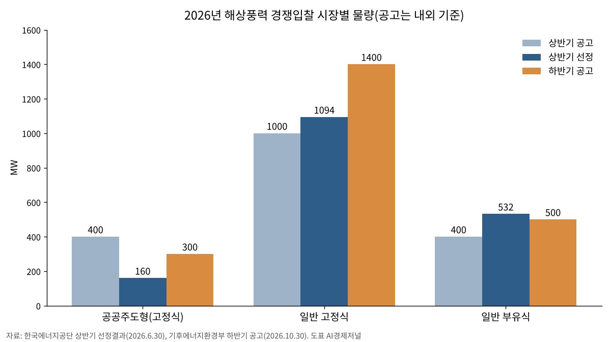

[해상풍력 기획③] 하반기 해상풍력 입찰 2.2GW, 공공주도 몫 300MW
고정식 상한가격 kWh당 168.937원, 상반기보다 1.34% 인하
비가격 평가 50점, 주민수용성 4점과 거점유지보수 9점
AI경제저널=김갑봉 기자 | 기후에너지환경부(장관 김성환)가 지난 10월 30일 2026년도 하반기 해상풍력 고정가격계약 경쟁입찰을 공고했다고 밝혔다. 공고 물량은 2200MW 내외다. 이 가운데 300MW 내외가 공공기관이 지분을 갖는 공공주도형 몫이다.
고정가격계약은 낙찰 사업자가 생산한 전기를 정해진 값에 20년 동안 파는 계약이다. 이번 입찰 평가표에는 주민 협의기구 운영 실적, 시공·운영 인프라 국내 투자, 고용 계획이 점수로 들어 있다.
하반기 2.2GW, 공공주도형 300MW 트랙
기후에너지환경부 보도자료를 보면 고정식 해상풍력이 1700MW 내외, 부유식이 500MW 내외다. 고정식은 일반 1400MW 내외와 공공주도형 300MW 내외로 나뉜다. 상반기와 같은 세 갈래 시장이다.
이번 입찰은 지난 6월 30일 공개한 해상풍력 중장기 입찰 이행안(로드맵) 뒤 첫 입찰이다.
상반기 1.8GW 내외를 더하면 올해 공고 물량은 4GW 규모다. 이행안은 2026~2035년 10년 동안 55GW를 입찰에 부친다고 밝혔다.
2030년 준공·착공 10.5GW, 2035년 누적 보급 25GW는 정부가 지난해 12월 관계부처 합동 보급계획에서 내놓은 목표다. 이행안은 그 후속 실행계획이다. 이호현 기후에너지환경부 2차관은 6월 30일 해상풍력을 「연관 산업과 함께 성장할 수 있는 국가 전략 산업」이라고 밝혔다.
설명회 자료를 보면 공공주도형에는 공공기관과 지방공기업법에 따른 지방공기업이 참여한다. 공공 지분 기본 요건은 여러 공공기관이 함께 출자하면 50% 초과, 한 곳이 홀로 출자하면 34% 이상이다. 정부 R&D 실증 기준을 고르면 각각 20% 이상, 10% 이상이다.
상한가격 168.937원과 상반기 결과

고정식 상한가격은 kWh당 168.937원, 부유식은 174.003원이다. 상반기보다 각각 1.34%, 0.63% 낮다. 기후에너지환경부는 국내외 균등화발전비용(LCOE) 변동률 전망과 환율, 입찰 경쟁률을 함께 고려했다고 밝혔다.
상반기 입찰에는 9개 사업 3656MW가 응찰해 5개 사업 1786MW가 뽑혔다. 응찰 규모가 선정 규모의 2배를 넘은 것은 2022년 경쟁입찰 도입 뒤 처음이다. 공공주도형은 400MW 내외를 공고했다. 2개 사업 560MW가 응찰해 1개 사업 160MW가 선정됐다.
상반기 고정식 선정 물량은 1254MW다. 2025년 연간 선정 물량 689MW보다 많다. 상반기 상한가격은 전년보다 약 3% 낮았다.
에너지경제연구원 이근대·임덕오 연구진은 2024년 12월 낸 보고서에서 국내 해상풍력 LCOE를 kWh당 271~300원으로 제시했다. 최근 준공 실적이 없어 전년도 추정치를 그대로 반영한 값이다. 이 값은 발전단가 추정이고, 입찰 상한가격은 계약 가격이다.
보고서는 국제재생에너지기구(IRENA) 자료를 달러당 1200원으로 환산했다. 2023년 해외 LCOE는 덴마크 57.6원, 영국 70.8원, 독일 75.6원이다.
연구진은 국내 해상풍력 이용률이 약 30%로 다른 나라 평균 44%보다 낮다고 분석했다. 설비비용 몫이 LCOE의 62~65%를 차지한다고도 적었다.
보고서는 해상풍력처럼 송전 인프라가 부족한 곳에서 계통 연계가 늦어지면 사업 경제성이 떨어질 수 있다고 분석했다. 송배전망 확충의 장기 계획과 선제적 투자를 정책 과제로 제시했다.
비가격 50점, 주민수용성 4점
한국에너지공단 설명회 자료를 보면 평가는 100점 만점이다. 사업내역서를 보는 1차 비계량 평가가 50점, 2차 계량 평가가 50점이다.
1차 평가의 주민수용성은 4점이다. 협의기구 구성·운영 실적, 정보공유 실적, 보상·지원 협의 실적, 주민참여사업 추진 실적, 지역협력계획을 종합해 본다.
산업경제효과는 공공주도형 20점, 일반 22점이다. 거점유지보수는 8점에서 9점으로 올랐다. 안보는 공공주도형 8점에서 9점, 일반 6점에서 7점으로 올랐다. 안보 안에서 선박·인력 정보 보안 배점이 2점에서 3점으로 늘었다. 상반기 2점이던 사업진행도는 평가에서 제외돼 0점이 됐다.
거점유지보수 9점 가운데 투자·인재양성·고용창출 배점이 2점에서 3점으로 올랐다. 시공·운영·관리 인프라 국내 투자와 인재양성·고용창출 실적·계획을 본다.
고용 계획은 정부가 발표한 고용유발계수처럼 공신력 있는 자료를 낼 때만 인정한다. 계획서에 사람 수만 적으면 인정하지 않는다.
인천 IC1과 인천신항 지원부두
기후에너지환경부는 지난 3월 15일 인천 공공주도 해상풍력 IC1을 신재생에너지 집적화단지로 지정했다. 인천시 자료를 보면 IC1은 옹진군 백아도 남서쪽 약 22km 해상의 1GW 규모 단지다.
입지는 어촌계 주민과 어업인을 대상으로 한 입지선호조사를 거쳐 골랐다. 인천 해상풍력 민관협의회는 정부 5명, 민간 16명, 공익 8명 등 29명이다.
인천시 에너지 전담기관인 인천도시공사는 7월 30일 기후에너지환경부 전기위원회에 IC1 680MW 발전사업허가를 신청했다. 인천시는 3월 자료에서 사업시행자를 공모로 뽑아 발전지구로 편입한다는 계획을 밝혔다.
인천시는 7월 20일 해양수산부 제4차 항만기본계획 수정계획에 인천신항 1-2 동측 부지를 해상풍력 지원부두로 개발하는 내용이 담겼다고 밝혔다.
통합관제센터, 안전훈련센터, 자재창고, 부품 교체·정비 시설을 갖추는 구상이다. 인천시는 올해 말까지 사업화 방안을 마련하고 특수목적법인(SPC) 설립을 추진한다. 조성은 2032년까지 마칠 계획이다.
2027년 RPS 일몰과 계약기간 25년 검토
이행안 요약은 재생에너지 공급의무화제도(RPS) 일몰 시점을 2027년 1월 1일로 적었다. RPS 폐지를 담은 재생에너지법 개정안은 6월 당시 국회에서 논의 중이었다. 기후에너지환경부는 그 뒤 입찰의 운영 방식과 선정 절차를 올해 하반기 중 구체화할 계획이다.
기후에너지환경부는 차기 경쟁입찰에서 고정가격계약 기간을 20년에서 25년으로 늘리는 방안을 검토한다. 해상풍력법에 따른 발전지구 경쟁입찰은 2029년 하반기 2GW로 시작할 계획이다.
참고문헌
- 이근대·임덕오, 『재생에너지 공급확대를 위한 중장기 발전단가(LCOE) 전망 시스템 구축(5/5)』, 에너지경제연구원 기본연구보고서 24-22, 2024년 12월, 27·60~61·82쪽, https://www.keei.re.kr
- 기후에너지환경부, 「2026년도 하반기 해상풍력 경쟁입찰 공고」, 보도참고자료, 2026년 10월 30일, https://www.korea.kr/briefing/pressReleaseView.do?newsId=156787209
- 기후에너지환경부, 「해상풍력 중장기 입찰 이행안(로드맵) 공개」, 보도자료, 2026년 6월 30일, https://www.korea.kr/briefing/pressReleaseView.do?newsId=156768760
- 기후에너지환경부, 「'26년 상반기 해상풍력 입찰 결과 5개 사업 1,786MW 선정」, 보도참고자료, 2026년 6월 30일, https://www.korea.kr/briefing/pressReleaseView.do?newsId=156768761
- 한국에너지공단 재생에너지센터, 「2026년 하반기 풍력 고정가격계약 경쟁입찰 종합설명회 발표자료」, 2026년 10월 14일, https://www.knrec.or.kr/biz/pds/notice/view.do?no=7203
- 한국에너지공단 재생에너지센터, 「2026년 상반기 풍력 고정가격계약 경쟁입찰 사업자 선정 결과」, 2026년 6월 30일, https://www.knrec.or.kr/biz/pds/notice/view.do?no=6705
- 인천광역시, 「인천 공공주도 해상풍력 집적화단지 지정」, 보도자료, 2026년 3월 16일, https://www.incheon.go.kr/IC010205/view?repSeq=DOM_0000000014342832
- 인천광역시, 「인천시, 공공주도 해상풍력 집적화단지(IC1) 지정 신청서 기후에너지환경부 제출」, 보도자료, 2025년 10월 21일, https://www.incheon.go.kr/IC010205/view?repSeq=DOM_0000000013343247
- 인천광역시, 「인천시, 인천신항으로 해상풍력 유지보수 산업 선점 나선다」, 보도자료, 2026년 7월 20일, https://www.incheon.go.kr/IC010205/view?repSeq=DOM_0000000015171786
- 인천광역시, 「인천시, 공공주도 해상풍력 집적화단지(IC1) 발전사업허가 신청」, 보도자료, 2026년 7월 30일, https://www.incheon.go.kr/IC010205/view?repSeq=DOM_0000000015248066
[사진 출처]
- [도표 1] 경세제민 AI·경제연구소 작성. 자료 한국에너지공단·기후에너지환경부
※ 이 기사는 AI 프로그램 클로드를 활용해 작성했습니다.
관련기사
저작권자 © AI경제저널 무단전재 및 재배포, AI학습 및 활용 금지